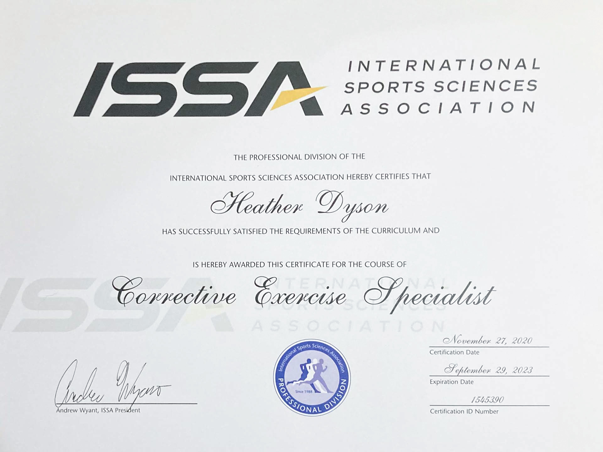
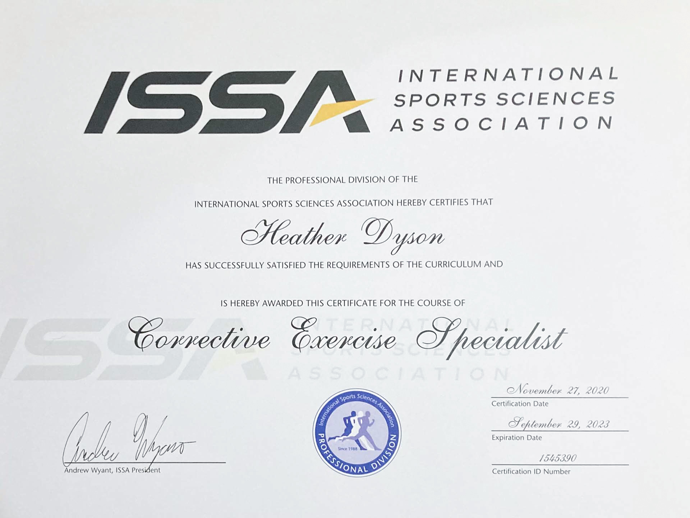

Certifications
ISSA
ISSA is a well-known and reputable organization offering certifications for fitness professionals. Through their programs, I have been able to expand my knowledge about the world of personal training, nutrition, and corrective exercise. By earning three certifications through them, I was awarded the Elite Trainer certification, which is a testament to my commitment to becoming a trusted fitness professional.
 

Continuing Education
I pursued and achieved certifications for Water Group Fitness and TRX, both of which are very popular classes. In each program, I gained valuable insight into improved coaching techniques and learned better ways to train and challenge the body.
Case Studies
Throughout my academic pursuits, I have been able to learn about many aspects of the health and fitness industry. I have had the opportunity to explore essential concepts such as risk analysis, program development, and nutritional planning. These areas provided exceptional insight and aligned well with my post-graduation goals.
Experience
Senior Fitness Classes
I was given the unique opportunity to design and teach three senior group fitness classes at a local Panorama community. The classes were designed for a specific group in the senior population based on their speciifc needs. Working with this group was a true joy, and I felt that I was able to better understand the limitations and contraindications to exercise and work around them to help support the health and fitness of my students.
Nutrition
I have been exposed to nutrition concepts in my undergraduate studies, my certification pursuits, and my own personal interest. I have followed tried and true methods for monitoring and analyzing eating lifestyles and have learned successful ways to develop plans for change. Healthy eating has become of my greatest passions as I've learned more about the world of wellness, and I am eager to share this knowledge with others so they may find the same success as I have.